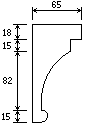
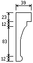

Grand Temple de l'Église Réformée
Le buffet.
Le positif |
|
Le positif |
|
Les panneaux arrières du buffet du positif postiche étaient autrefois vissés ; cela permettait d'accéder aux tuyaux. Ils sont aujourd'hui cloués, probablement par Maurice Puget car le travail est mal fait.
Des tasseaux, probablement destinés à supporter des porte-bougeoirs sont encore en place sur la face arrière du positif postiche.
Une grande mortaise est pratiquée au niveau du sol dans les panneaux arrière du buffet du positif postiche ; je n'ai su déterminer son utilité.
|
 Profil de la moulure du positif postiche au niveau du haut des tourelles extérieures. |
 Profil de la moulure du positif postiche au niveau du haut de la plate-face centrale. |
|
Deux barres de fer partant en haut de l'arrière de chaque tourelle du positif rejoignent le grand corps de buffet afin de le retenir. Elles sont relayées sur l'arrière par deux autres barres de fer vissées à 45o sur la planche de soutient des tournants de registres. |
 |